15 Корреляция и регрессия
15.1 Дисперсия и стандартное отклонение
Дисперсия — мера разброса значений наблюдений относительно среднего.
\[\sigma^2_X = \frac{\sum_{i = 1}^n(x_i - \bar{x})^2}{n - 1},\]
где
- \(x_1, ..., x_n\) — наблюдения;
- \(\bar{x}\) — среднее всех наблюдений;
- \(X\) — вектор всех наблюдений;
- \(n\) — количество наблюдений.
Представим, что у нас есть следующие данные:
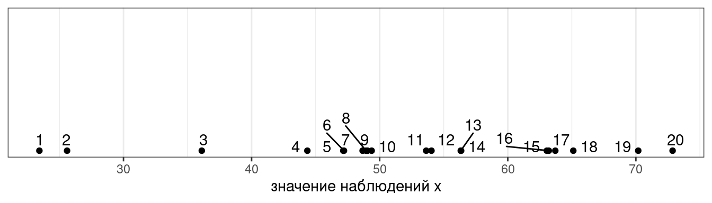
Тогда дисперсия — это сумма квадратов расстояний от каждой точки до среднего выборки (пунктирная линия) разделенное на количество наблюдений - 1 (по духу эта мера — обычное среднее, но если вас инетересует разница смещенной и несмещенной оценки дисперсии, см. видео).
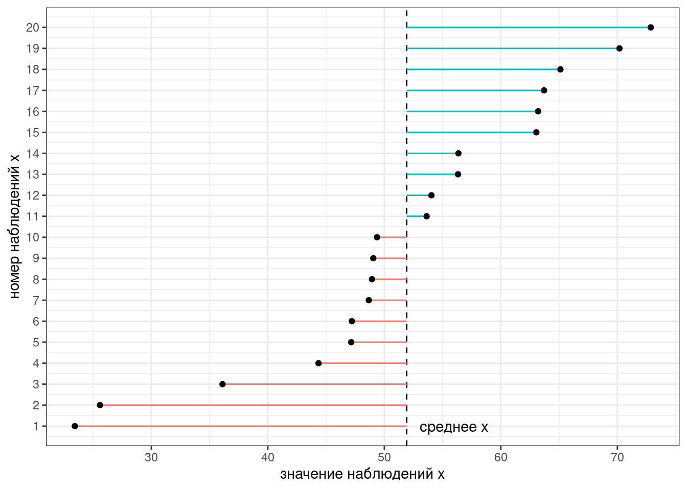
Для того чтобы было понятнее, что такое дисперсия, давайте рассмотрим несколько расспределений с одним и тем же средним, но разными дисперсиями:
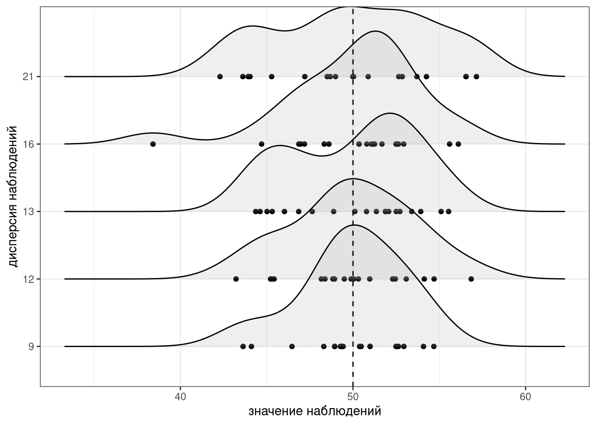
В R дисперсию можно посчитать при помощи функции var()24.
set.seed(42)
x <- rnorm(20, mean = 50, sd = 10)
var(x)[1] 172.2993Проверим, что функция выдает то же, что мы записали в формуле.
var(x) == sum((x - mean(x))^2)/(length(x)-1)[1] TRUEТак как дисперсия является квадратом отклонения, то часто вместо нее используют более интерпретируемое стандартное отклонение \(\sigma\) — корень из дисперсии. В R ее можно посчитать при помощи функции sd():
sd(x)[1] 13.12628sd(x) == sqrt(var(x))[1] TRUE
Посчитайте дисперсию переменной sleep_total в датасете msleep, встроенный в tidyverse. Ответ округлите до двух знаков после запятой.
Посчитайте стандартное отклонение переменной sleep_total в датасете msleep, встроенный в tidyverse. Ответ округлите до двух знаков после запятой.
15.2 z-преобразование
z-преобразование (еще используют термин нормализация) — это способ представления данных в виде расстояний от среднего, измеряемых в стандартных отклонениях. Для того чтобы его получить, нужно из каждого наблюдения вычесть среднее и результат разделить на стандартное отклонение.
\[x_i = \frac{x_i - \bar{x}}{\sigma_X}\]
Если все наблюдения z-преобразовать, то получиться распределение с средним в 0 и стандартным отклонением 1 (или очень близко к ним).
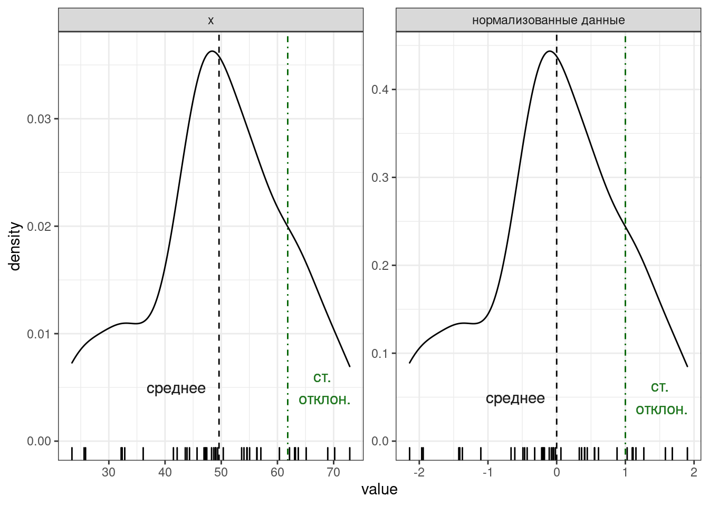
Само по себе \(z\)-преобразование ничего особенного нам про данные не говорит. Однако это преобразование позволяет привести к “общему знаменателю” разные переменные. Т. е. это преобразование ничего нам не говорит про конкретный набор данных, но позволяет сравнивать разные наборы данных.
В R z-преобразование можно сделать при помощи функции scale(). Эта функция вовзращает матрицу, поэтому я использую индекс [,1], чтобы результат был вектором.
set.seed(42)
x <- rnorm(20, mean = 50, sd = 10)
scale(x)[,1] [1] 0.8982271 -0.5764146 0.1304317 0.3359234 0.1617734 -0.2270593
[7] 1.0053127 -0.2183246 1.3914857 -0.1939880 0.8478787 1.5958251
[13] -1.2042865 -0.3586002 -0.2477787 0.3382758 -0.3627629 -2.1699785
[19] -2.0054319 0.8594918Проверим, что функция выдает то же, что мы записали в формуле.
scale(x)[,1] == (x-mean(x))/sd(x) [1] TRUE TRUE TRUE TRUE TRUE TRUE TRUE TRUE TRUE TRUE TRUE TRUE TRUE TRUE TRUE
[16] TRUE TRUE TRUE TRUE TRUEОднаждый я заполучил градусник со шкалой Фаренгейта и целый год измерял температуру в Москве при помощи градусников с шкалой Фарингейта и Цельсия. В датасет записаны средние значения для каждого месяца. Постройте график нормализованных и ненормализованных измерений. Что можно сказать про измерения, сделанные разными термометрами?
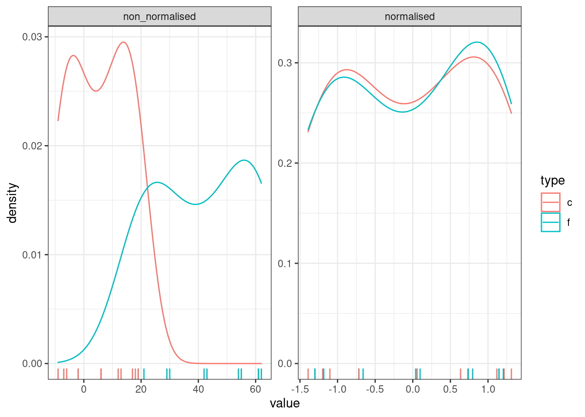
15.3 Ковариация
Ковариация — эта мера ассоциации двух переменных.
\[cov(X, Y) = \frac{\sum_{i = 1}^n(x_i - \bar{x})(y_i-\bar{y})}{n - 1},\]
где
- \((x_1, y_1), ..., (x_n, y_n)\) — пары наблюдений;
- \(\bar{x}, \bar{y}\) — средние наблюдений;
- \(X, Y\) — векторы всех наблюдений;
- \(n\) — количество наблюдений.
Представим, что у нас есть следующие данные:
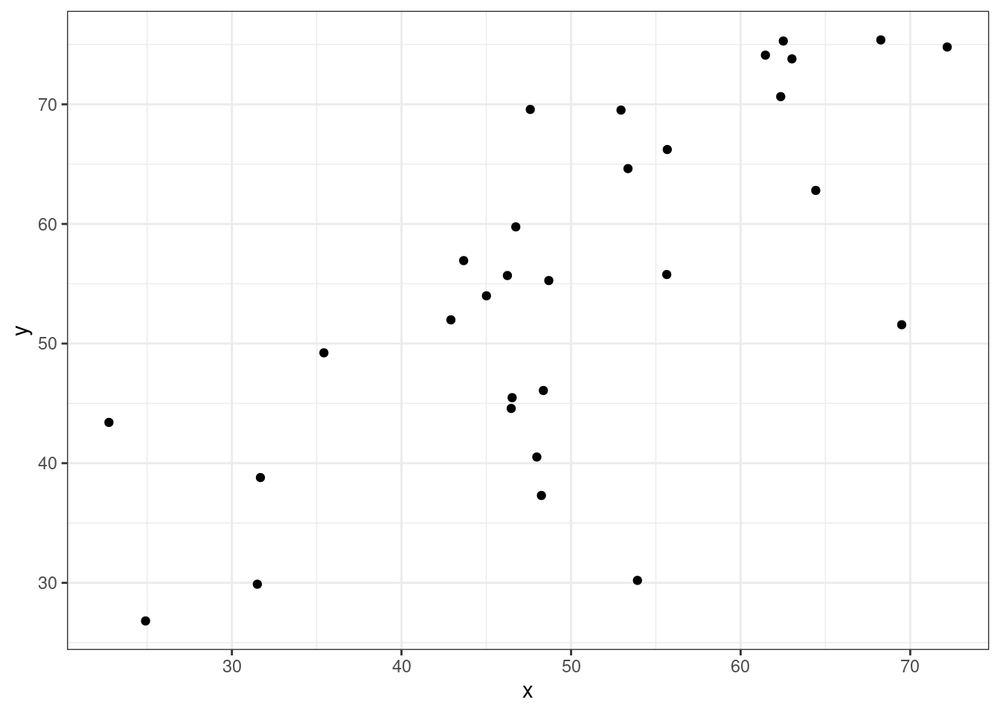
Тогда, согласно формуле, для каждой точки вычисляется следующая площадь (пуктирными линиями обозначены средние):
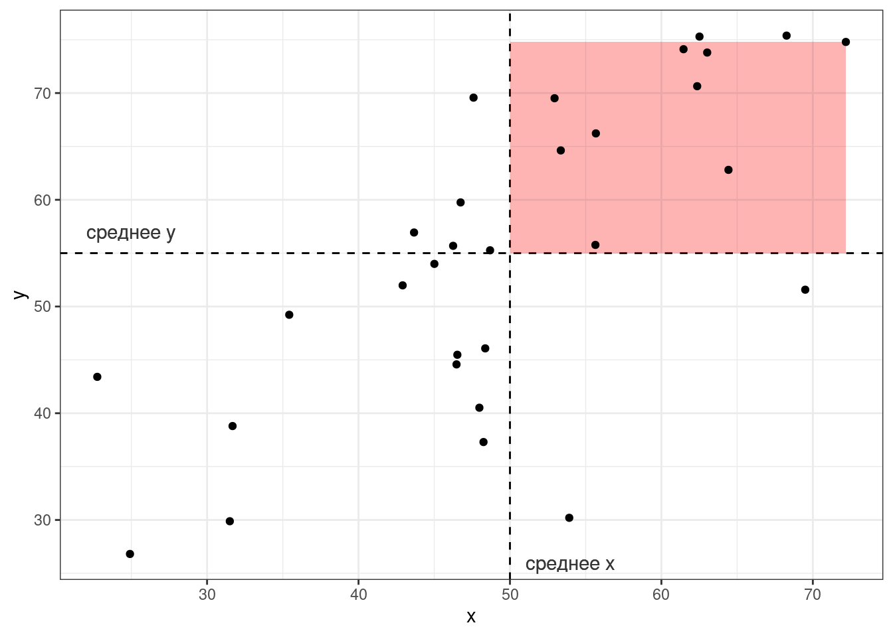
Если значения \(x_i\) и \(y_i\) какой-то точки либо оба больше, либо оба меньше средних \(\bar{x}\) и \(\bar{y}\), то получившееся произведение будет иметь знак +, если же наоборот — знак -. На графике это показано цветом.
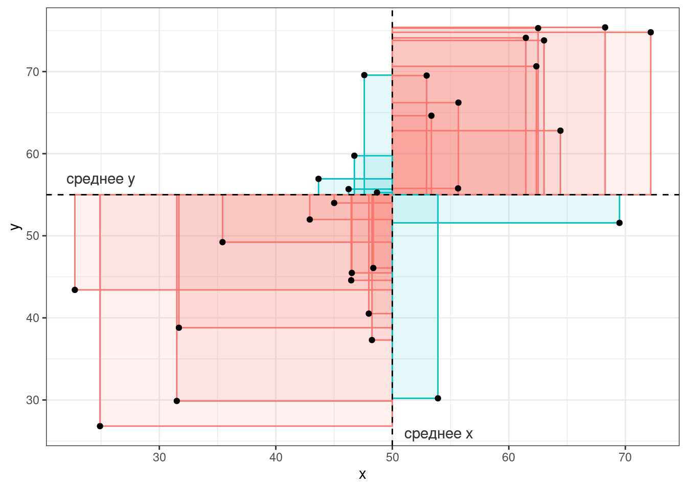
Таким образом, если много красных прямоугольников, то значение суммы будет положительное и обозначать положительную связь (чем больше \(x\), тем больше \(y\)), а если будет много синий прямоугольников, то значение суммы отрицательное и обозначать положительную связь (чем больше \(x\), тем меньше \(y\)). Непосредственно значение ковариации не очень информативно, так как может достаточно сильно варьироваться от датасета к датасету.
В R ковариацию можно посчитать при помощи функции cov().
set.seed(42)
x <- rnorm(10, mean = 50, sd = 10)
y <- x + rnorm(10, sd = 10)
cov(x, y)[1] 18.72204cov(x, -y*2)[1] -37.44407Как видно, простое умножение на два удвоило значение ковариации, что показывает, что непосредственно ковариацию использовать для сравнения разных датасетов не стоит.
Проверим, что функция выдает то же, что мы записали в формуле.
cov(x, y) == sum((x-mean(x))*(y - mean(y)))/(length(x)-1)[1] TRUE15.4 Корреляция
Корреляция — это мера ассоциации/связи двух числовых переменных. Помните, что бытовое применение этого термина к категориальным переменным (например, корреляция цвета глаз и успеваемость на занятиях по R) не имеет смысла с точки зрения статистики.
15.4.1 Корреляция Пирсона
Коэффициент корреляции Пирсона — базовый коэффициент ассоциации переменных, однако стоит помнить, что он дает неправильную оценку, если связь между переменными нелинейна.
\[\rho_{X,Y} = \frac{cov(X, Y)}{\sigma_X\times\sigma_Y} = \frac{1}{n-1}\times\sum_{i = 1}^n\left(\frac{x_i-\bar{x}}{\sigma_X}\times\frac{y_i-\bar{y}}{\sigma_Y}\right),\]
где
- \((x_1, y_1), ..., (x_n, y_n)\) — пары наблюдений;
- \(\bar{x}, \bar{y}\) — средние наблюдений;
- \(X, Y\) — векторы всех наблюдений;
- \(n\) — количество наблюдений.
Последнее уравнение показывает, что коэффициент корреляции Пирсона можно представить как среднее (с поправкой, поэтому \(n-1\), а не \(n\)) произведение \(z\)-нормализованных значений двух переменных.
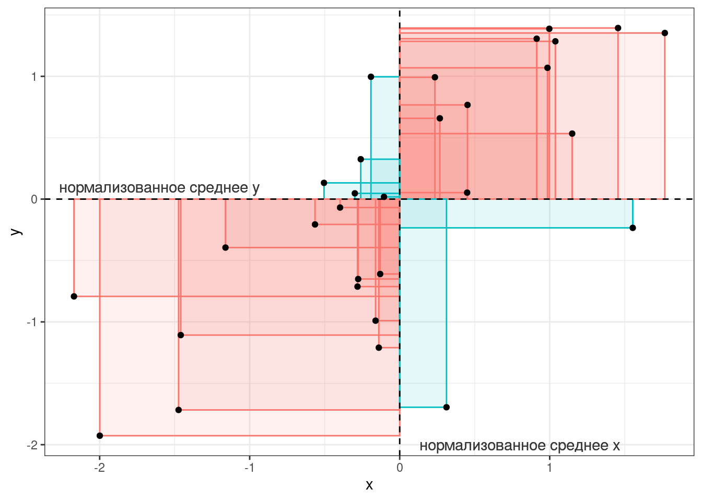
Эта нормализация приводит к тому, что
- значения корреляции имеют те же свойства знака коэффициента что и ковариация:
- если коэффициент положительный (т. е. много красных прямоугольников) — связь между переменными положительная (чем больше \(x\), тем больше \(y\)),
- если коэффициент отрицательный (т. е. много синих прямоугольников) — связь между переменными отрицательная (чем больше \(x\), тем меньше \(y\));
- значение корреляции имееет независимое от типа данных интеретация:
- если модуль коэффициента близок к 1 или ему равен — связь между переменными сильная,
- если модуль коэффициента близок к 0 или ему равен — связь между переменными слабая.
Для того чтобы было понятнее, что такое корреляция, давайте рассмотрим несколько расспределений с разными значениями корреляции:
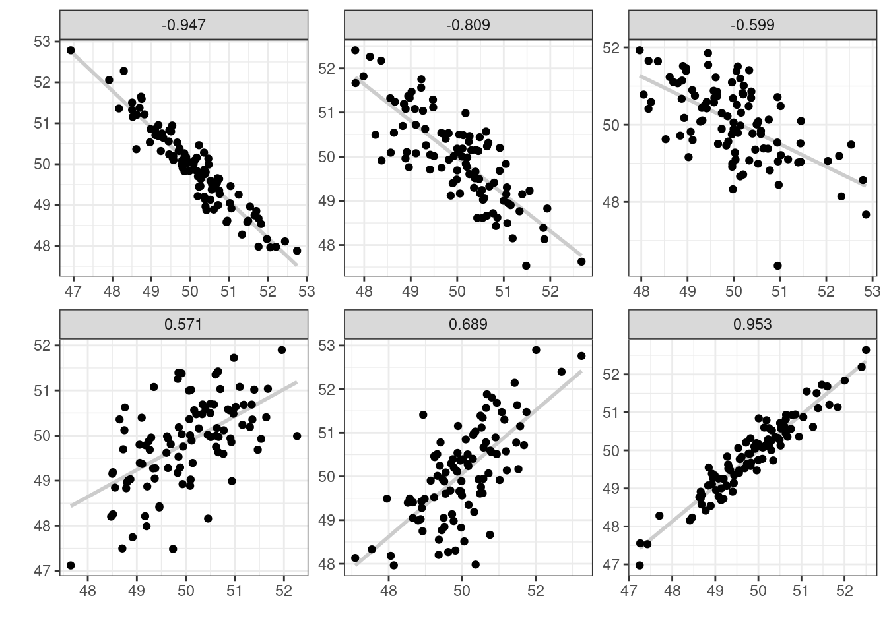
Как видно из этого графика, чем ближе модуль корреляции к 1, тем боллее компактно расположены точки друг к другу, чем ближе к 0, тем более рассеяны значения. Достаточно легко научиться приблизительно оценивать коэфициент корреляции на глаз, поиграв 2–5 минут в игру “Угадай корреляцию” здесь или здесь.
В R коэффициент корреляции Пирсона можно посчитать при помощи функции cor().
set.seed(42)
x <- rnorm(15, mean = 50, sd = 10)
y <- x + rnorm(15, sd = 10)
cor(x, y)[1] 0.6659041Проверим, что функция выдает то же, что мы записали в формуле.
cor(x, y) == cov(x, y)/(sd(x)*sd(y))[1] TRUEcor(x, y) == sum(scale(x)*scale(y))/(length(x)-1)[1] TRUEПосчитайте на основе датасета с температурой корреляцию между разными измерениями в шкалах Фарингейта и Цельсия? Результаты округлите до трех знаков после запятой.
15.4.2 Ранговые корреляции Спирмана и Кендалла
Коэффициент корреляции Пирсона к сожалению, чувствителен к значениям наблюдений. Если связь между переменными нелинейна, то оценка будет получаться смещенной. Рассмотрим, например, словарь [Ляшевской, Шарова 2011]:
freqdict <- read_tsv("https://github.com/agricolamz/DS_for_DH/raw/master/data/freq_dict_2011.csv")
freqdict %>%
arrange(desc(freq_ipm)) %>%
mutate(id = 1:n()) %>%
slice(1:100) ->
filered_freqdict
filered_freqdict %>%
ggplot(aes(id, freq_ipm, label = lemma))+
geom_point()+
ggrepel::geom_text_repel()+
scale_y_log10()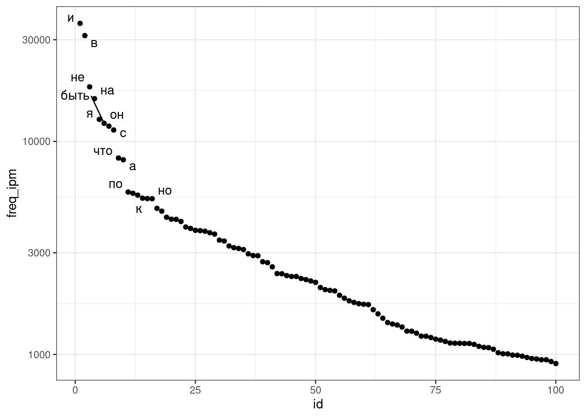
В целом корреляция между рангом и частотой должна быть высокая, однако связь между этими переменными нелинейна, так что коэффициент корреляции Пирсона не такой уж и высокий:
cor(filered_freqdict$freq_ipm, filered_freqdict$id)[1] -0.6307876Для решения той проблемы обычно используют ранговые коэффециенты коррляции Спирмана и Кендала, которые принимают во внимание ранг значения, а не его непосредственное значение.
cor(filered_freqdict$freq_ipm, filered_freqdict$id, method = "spearman")[1] -1cor(filered_freqdict$freq_ipm, filered_freqdict$id, method = "kendall")[1] -1Давайте сравним с предыдущими наблюдениями и их логаотфмамиы:
cor(x, y) == cor(log(x), log(y))[1] FALSEcor(x, y, method = "spearman") == cor(log(x), log(y), method = "spearman")[1] TRUEcor(x, y, method = "kendall") == cor(log(x), log(y), method = "kendall")[1] TRUE15.5 Регрессионный анализ
15.5.1 Основы
Суть регрессионного анализа в моделировании связи между двумя и более переменными при помощи прямой на плоскости. Формула прямой зависит от двух параметров: свободного члена (intercept) и углового коэффициента (slope).
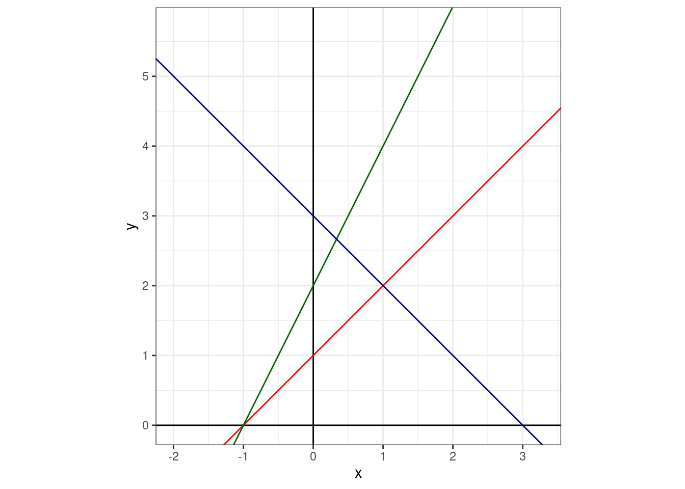
Укажите значение свободного члена для красной прямой.
Укажите значение свободного члена для зеленой прямой.
Укажите значение свободного члена для синей прямой.
Укажите значение углового коэффициента для красной прямой.
Укажите значение углового коэффициента для зеленой прямой.
Укажите значение углового коэффициента для синей прямой.
Когда мы пытаемся научиться предсказывать данные одной переменной \(Y\) при помощи другой переменной \(X\), мы получаем похожую формулу:
\[y_i = \hat\beta_0 + \hat\beta_1 \times x_i + \epsilon_i,\] где
- \(x_i\) — \(i\)-ый элемент вектора значений \(X\);
- \(y_i\) — \(i\)-ый элемент вектора значений \(Y\);
- \(\hat\beta_0\) — оценка случайного члена (intercept);
- \(\hat\beta_1\) — оценка углового коэффициента (slope);
- \(\epsilon_i\) — \(i\)-ый остаток, разница между оценкой модели (\(\hat\beta_0 + \hat\beta_1 \times x_i\)) и реальным значением \(y_i\); весь вектор остатков иногда называют случайным шумом (на графике выделены красным).
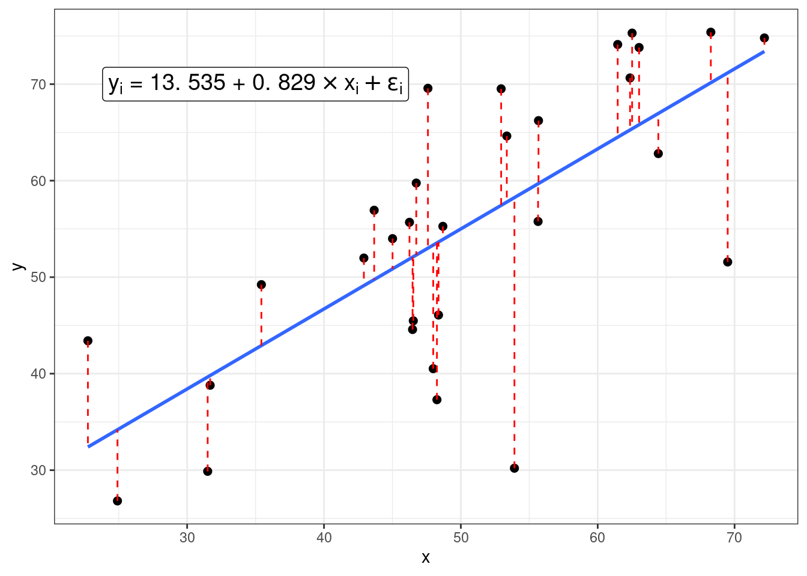
Задача регрессии — оценить параметры \(\hat\beta_0\) и \(\hat\beta_1\), если нам известны все значения \(x_i\) и \(y_i\) и мы пытаемся минимизировать значния \(\epsilon_i\). В данном конкретном случае, задачу можно решить аналитически и получить следующие формулы:
\[\hat\beta_1 = \frac{(\sum_{i=1}^n x_i\times y_i)-n\times\bar x \times \bar y}{\sum_{i = 1}^n(x_i-\bar x)^2}\]
\[\hat\beta_0 = \bar y - \hat\beta_1\times\bar x\]
15.5.2 Первая регрессия
Давайте попробуем смоделировать количество слов и в рассказах М. Зощенко в зависимости от длины рассказа:
zo <- read_tsv("https://github.com/agricolamz/DS_for_DH/raw/master/data/tidy_zoshenko.csv")
zo %>%
filter(word == "и") %>%
distinct() %>%
ggplot(aes(n_words, n))+
geom_point()+
labs(x = "количество слов в рассказе",
y = "количество и")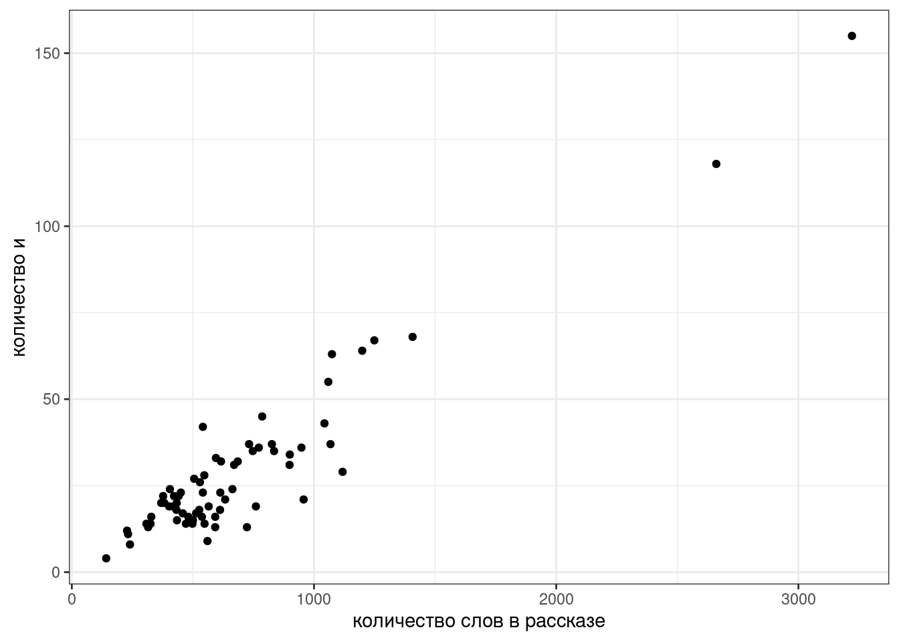
Мы видим, несколько одиночных точек, давайте избавимся от них и добавим регрессионную линию при помощи функции geom_smooth():
zo %>%
filter(word == "и",
n_words < 1500) %>%
distinct() ->
zo_filtered
zo_filtered %>%
ggplot(aes(n_words, n))+
geom_point()+
geom_smooth(method = "lm", se = FALSE)+
labs(x = "количество слов в рассказе",
y = "количество и")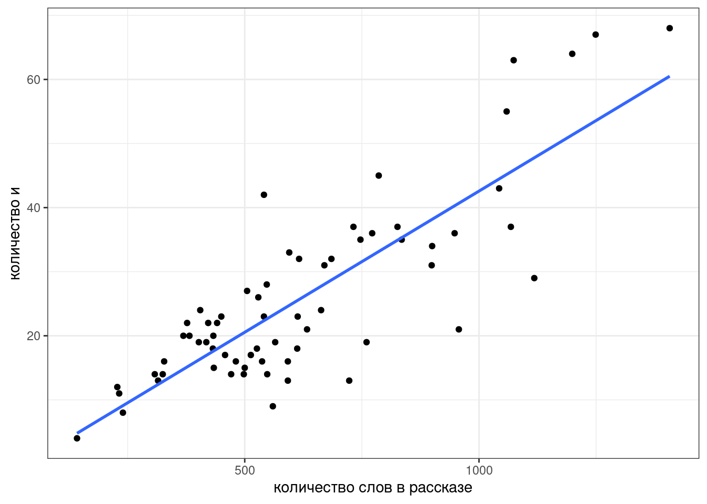
Чтобы получить формулу этой линии нужно запустить функцию, которая оценивает линейную регрессию:
fit <- lm(n~n_words, data = zo_filtered)
fit
Call:
lm(formula = n ~ n_words, data = zo_filtered)
Coefficients:
(Intercept) n_words
-1.47184 0.04405 Вот мы и получили коэффициенты, теперь мы видим, что наша модель считает следующее:
\[n = -1.47184 + 0.04405 \times n\_words\]
Более подробную информцию можно посмотреть, если запустить модель в функцию summary():
summary(fit)
Call:
lm(formula = n ~ n_words, data = zo_filtered)
Residuals:
Min 1Q Median 3Q Max
-19.6830 -4.3835 0.8986 4.6486 19.6413
Coefficients:
Estimate Std. Error t value Pr(>|t|)
(Intercept) -1.471840 2.467149 -0.597 0.553
n_words 0.044049 0.003666 12.015 <2e-16 ***
---
Signif. codes: 0 '***' 0.001 '**' 0.01 '*' 0.05 '.' 0.1 ' ' 1
Residual standard error: 7.945 on 64 degrees of freedom
Multiple R-squared: 0.6928, Adjusted R-squared: 0.688
F-statistic: 144.4 on 1 and 64 DF, p-value: < 2.2e-16В разделе Coefficients содержится информацию про наши коэффициенты:
Estimate– полученная оценка коэффициентов;Std. Error– стандартная ошибка среднего;t value– \(t\)-статистика, полученная при проведении одновыборочного \(t\)-теста, сравнивающего данный коэфициент с 0;Pr(>|t|)– полученное \(p\)-значение;Multiple R-squaredиAdjusted R-squared— одна из оценок модели, показывает связь между переменными. Без поправок совпадает с квадратом коэффициента корреляции Пирсона:
cor(zo_filtered$n_words, zo_filtered$n)^2[1] 0.6928376F-statistic— \(F\)-статистика полученная при проведении теста, проверяющего, не являются ли хотя бы один из коэффицинтов статистически значимо отличается от нуля. Совпадает с результатами дисперсионного анализа (ANOVA).
Теперь мы можем даже предсказывать значения, которые мы еще не видели. Например, сколько будет и в рассказе Зощенко длиной 1000 слов?
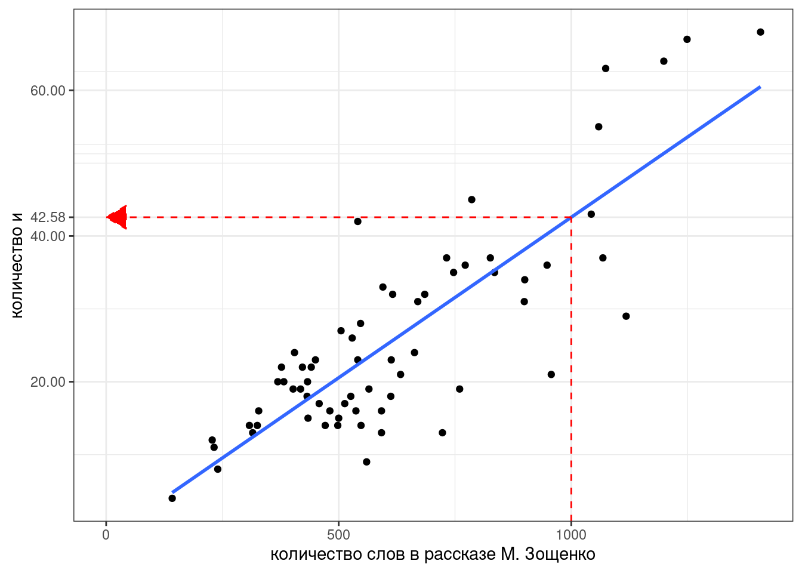
predict(fit, tibble(n_words = 1000)) 1
42.57715 Постройте ленейную ргерессию на основании рассказов А. Чехова, предсказывая количество и на основании количства слов. При моделировании используйте только рассказы длиной меньше 2500 слов. Укажите свободный член получившейся модели, округлив его до 3 знаков после запятой.
Укажите угловой коффициент получившейся модели, округлив его до 3 знаков после запятой.
Укажите предсказания модели для рассказа длиной 1000 слов, округлив получнное значение до 3 знаков после запятой.
15.5.3 Категориальные переменные
Что если мы хотим включить в наш анализ категориальные переменные? Давайте рассмотрим простой пример с рассказами Чехова и Зощенко, которые мы рассматривали в прошлом разделе. Мы будем анализировать логарифм доли слов деньги:
chekhov <- read_tsv("https://github.com/agricolamz/DS_for_DH/raw/master/data/tidy_chekhov.tsv")
zoshenko <- read_tsv("https://github.com/agricolamz/DS_for_DH/raw/master/data/tidy_zoshenko.csv")
chekhov$author <- "Чехов"
zoshenko$author <- "Зощенко"
chekhov %>%
bind_rows(zoshenko) %>%
filter(str_detect(word, "деньг")) %>%
group_by(author, titles, n_words) %>%
summarise(n = sum(n)) %>%
mutate(log_ratio = log(n/n_words)) ->
checkov_zoshenkoВизуализация выглядит так: 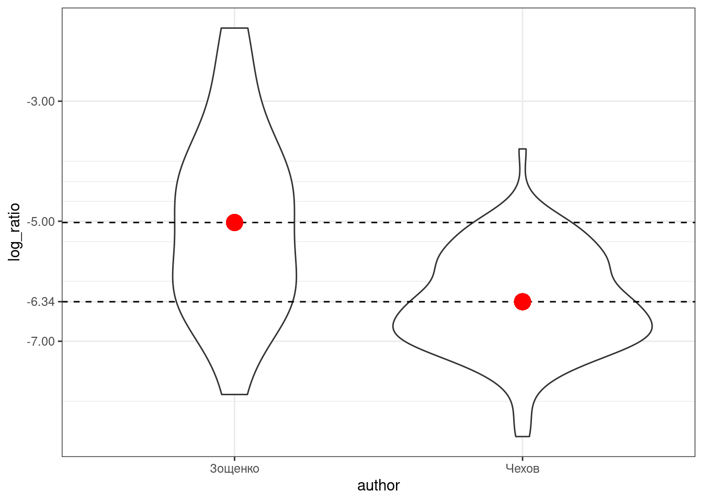
Красной точкой обозначены средние значения, так что мы видим, что между двумя писателями есть разница, но является ли она статистически значимой? В прошлом разделе, мы рассмотрели, что в таком случае можно сделать t-test:
t.test(log_ratio~author,
data = checkov_zoshenko,
var.equal =TRUE) # здесь я мухлюю, отключая поправку Уэлча
Two Sample t-test
data: log_ratio by author
t = 5.6871, df = 125, p-value = 8.665e-08
alternative hypothesis: true difference in means between group Зощенко and group Чехов is not equal to 0
95 percent confidence interval:
0.8606107 1.7793181
sample estimates:
mean in group Зощенко mean in group Чехов
-5.021262 -6.341226 Разница между группами является статистически значимой (t(125) = 5.6871, p-value = 8.665e-08).
Для того, чтобы запустить регрессию на категориальных данных категориальная переменная автоматически разбивается на группу бинарных dummy-переменных:
tibble(author = c("Чехов", "Зощенко"),
dummy_chekhov = c(1, 0),
dummy_zoshenko = c(0, 1))Дальше для регрессионного анализа выкидывают одну из переменных, так как иначе модель не сойдется (dummy-переменных всегда n-1, где n — количество категорий в переменной).
tibble(author = c("Чехов", "Зощенко"),
dummy_chekhov = c(1, 0))Если переменная dummy_chekhov принимает значение 1, значит речь о рассказе Чехова, а если принимает значение 0, то о рассказе Зощенко. Если вставить нашу переменную в регрессионную формулу получится следующее:
\[y_i = \hat\beta_0 + \hat\beta_1 \times \text{dummy_chekhov} + \epsilon_i,\]
Так как dummy_chekhov принимает либо значение 1, либо значение 0, то получается, что модель предсказывает лишь два значения:
\[y_i = \left\{\begin{array}{ll}\hat\beta_0 + \hat\beta_1 \times 1 + \epsilon_i = \hat\beta_0 + \hat\beta_1 + \epsilon_i\text{, если рассказ Чехова}\\ \hat\beta_0 + \hat\beta_1 \times 0 + \epsilon_i = \hat\beta_0 + \epsilon_i\text{, если рассказ Зощенко} \end{array}\right.\]
Таким образом, получается, что свободный член \(\beta_0\) и угловой коэффициент \(\beta_1\) в регресси с категориальной переменной получает другую интерпретацию. Одно из значений переменной кодируется при помощи \(\beta_0\), а сумма коэффициентов \(\beta_0+\beta_1\) дают другое значение переменной. Так что \(\beta_1\) — это разница между оценками двух значений переменной.
Давайте теперь запустим регрессию на этих же данных:
fit2 <- lm(log_ratio~author, data = checkov_zoshenko)
summary(fit2)
Call:
lm(formula = log_ratio ~ author, data = checkov_zoshenko)
Residuals:
Min 1Q Median 3Q Max
-2.8652 -0.6105 -0.0607 0.6546 3.2398
Coefficients:
Estimate Std. Error t value Pr(>|t|)
(Intercept) -5.0213 0.2120 -23.680 < 2e-16 ***
authorЧехов -1.3200 0.2321 -5.687 8.67e-08 ***
---
Signif. codes: 0 '***' 0.001 '**' 0.01 '*' 0.05 '.' 0.1 ' ' 1
Residual standard error: 0.9717 on 125 degrees of freedom
Multiple R-squared: 0.2056, Adjusted R-squared: 0.1992
F-statistic: 32.34 on 1 and 125 DF, p-value: 8.665e-08Во-первых стоит обратить внимание на то, что R сам преобразовал нашу категориальную переменную в dummy-переменную authorЧехов. Во-вторых, можно заметить, что значения t-статистики и p-value совпадают с результатами полученными нами в t-тесте выше. Статистическти значимый коэффициент при аргументе authorЧехов следует интерпретировать как разницу средних между логарифмом долей в рассказах Чехова и Зощенко.
В работе (Coretta 2017, https://goo.gl/NrfgJm) рассматривается отношения между длительностью гласного и придыхание согласного. Автор собрал данные 5 носителей исландского. Дальше он извлек длительность гласного, после которого были придыхательные и непридыхательные. Скачайте данные и постройте регрессионную модель, предсказывающую длительность гласного на основе .
15.5.4 Множественная регрессия
Множественная регрессия позволяет проанализировать связь между зависимой и несколькими зависимыми переменными. Формула множественной регрессии не сильно отличается от формулы обычной линейной регрессии:
\[y_i = \hat\beta_0 + \hat\beta_1 \times x_{1i}+ \dots+ \hat\beta_n \times x_{ni} + \epsilon_i,\]
- \(x_{ki}\) — \(i\)-ый элемент векторов значений \(X_1, \dots, X_n\);
- \(y_i\) — \(i\)-ый элемент вектора значений \(Y\);
- \(\hat\beta_0\) — оценка случайного члена (intercept);
- \(\hat\beta_k\) — коэфциент при переменной \(X_{k}\);
- \(\epsilon_i\) — \(i\)-ый остаток, разница между оценкой модели (\(\hat\beta_0 + \hat\beta_1 \times x_i\)) и реальным значением \(y_i\); весь вектор остатков иногда называют случайным шумом.
В такой регресии предикторы могут быть как числовыми, так и категориальными (со всеми вытекающими последствиями, которые мы обсудили в предудщем разделе). Такую регрессию чаще всего сложно визуализировать, так как в одну регрессионную линию вкладываются сразу несколько переменных.
Попробуем предсказать длину лепестка на основе длины чашелистик и вида ириса:
iris %>%
ggplot(aes(Sepal.Length, Petal.Length, color = Species))+
geom_point()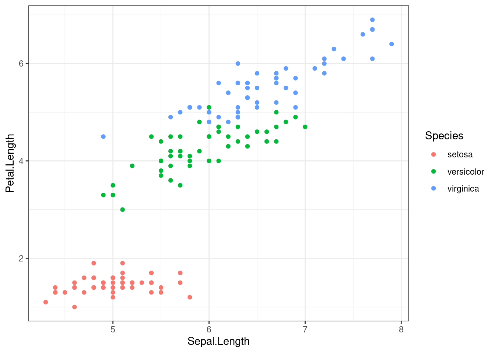
Запустим регрессию:
fit3 <- lm(Petal.Length ~ Sepal.Length+ Species, data = iris)
summary(fit3)
Call:
lm(formula = Petal.Length ~ Sepal.Length + Species, data = iris)
Residuals:
Min 1Q Median 3Q Max
-0.76390 -0.17875 0.00716 0.17461 0.79954
Coefficients:
Estimate Std. Error t value Pr(>|t|)
(Intercept) -1.70234 0.23013 -7.397 1.01e-11 ***
Sepal.Length 0.63211 0.04527 13.962 < 2e-16 ***
Speciesversicolor 2.21014 0.07047 31.362 < 2e-16 ***
Speciesvirginica 3.09000 0.09123 33.870 < 2e-16 ***
---
Signif. codes: 0 '***' 0.001 '**' 0.01 '*' 0.05 '.' 0.1 ' ' 1
Residual standard error: 0.2826 on 146 degrees of freedom
Multiple R-squared: 0.9749, Adjusted R-squared: 0.9744
F-statistic: 1890 on 3 and 146 DF, p-value: < 2.2e-16Все предикторы статистически значимы. Давайте посмотрим предсказания модели для всех наблюдений:
iris %>%
mutate(prediction = predict(fit3)) %>%
ggplot(aes(Sepal.Length, prediction, color = Species))+
geom_point()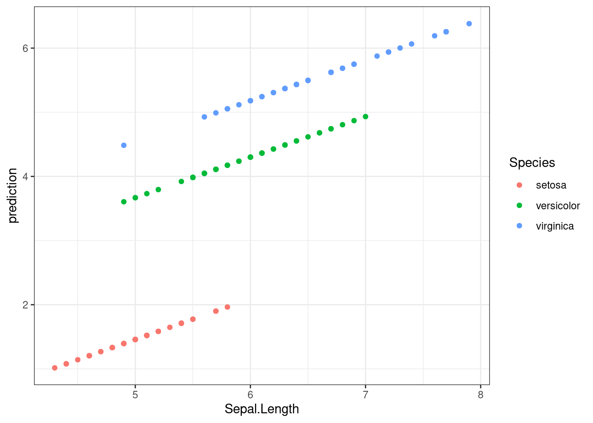
Всегда имеет смысл визуализировать, что нам говорит наша модель. Если использовать пакет ggeffects (или предшествовавший ему пакет effects), это можно сделать не сильно задумываясь, как это делать:
library(ggeffects)
plot(ggpredict(fit3, terms = c("Sepal.Length", "Species")))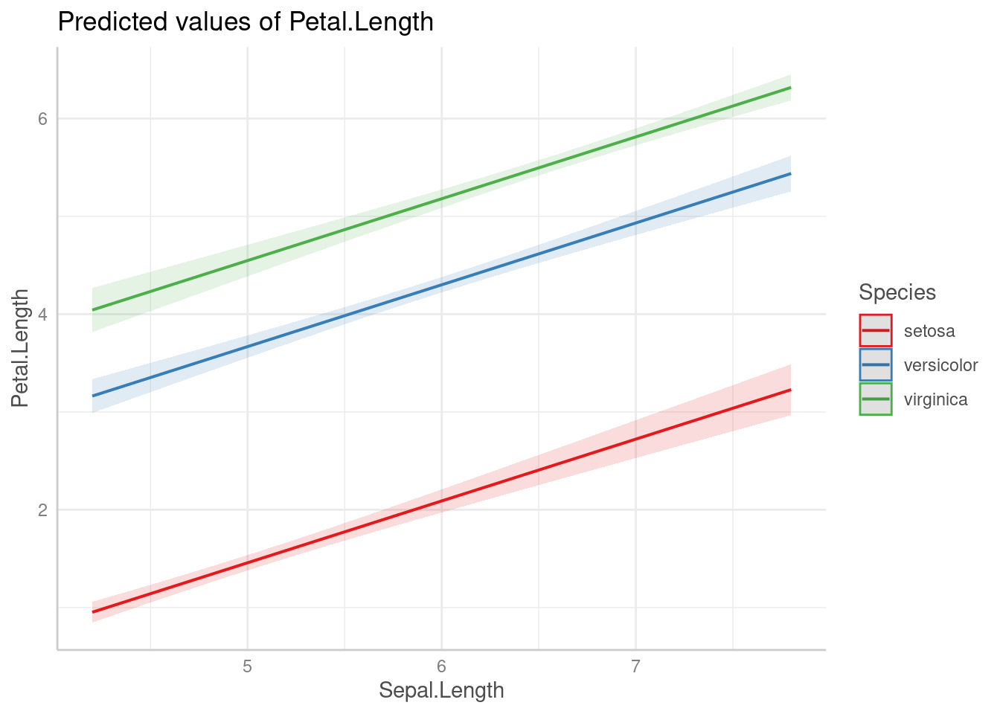
Как видно из графиков, наша модель имеет одинаковые угловые коэффициенты (slope) для каждого из видов ириса и разные свободные члены (intercept).
summary(fit3)
Call:
lm(formula = Petal.Length ~ Sepal.Length + Species, data = iris)
Residuals:
Min 1Q Median 3Q Max
-0.76390 -0.17875 0.00716 0.17461 0.79954
Coefficients:
Estimate Std. Error t value Pr(>|t|)
(Intercept) -1.70234 0.23013 -7.397 1.01e-11 ***
Sepal.Length 0.63211 0.04527 13.962 < 2e-16 ***
Speciesversicolor 2.21014 0.07047 31.362 < 2e-16 ***
Speciesvirginica 3.09000 0.09123 33.870 < 2e-16 ***
---
Signif. codes: 0 '***' 0.001 '**' 0.01 '*' 0.05 '.' 0.1 ' ' 1
Residual standard error: 0.2826 on 146 degrees of freedom
Multiple R-squared: 0.9749, Adjusted R-squared: 0.9744
F-statistic: 1890 on 3 and 146 DF, p-value: < 2.2e-16\[y_i = \left\{\begin{array}{ll} -1.70234 + 0.63211 \times \text{Sepal.Length} + \epsilon_i\text{, если вид setosa}\\ -1.70234 + 2.2101 + 0.63211 \times \text{Sepal.Length} + \epsilon_i\text{, если вид versicolor} \\ -1.70234 + 3.09 + 0.63211 \times \text{Sepal.Length} + \epsilon_i\text{, если вид virginica} \end{array}\right.\]
15.5.5 Сравнение моделей
Как нам решить, какая модель лучше? Ведь теперь можно добавить сколько угодно предикторов? Давайте создадим новую модель без предиктора Species:
fit4 <- lm(Petal.Length ~ Sepal.Length, data = iris)- можно сравнивать статистическую значимость предикторов
- можно сравнивать \(R^2\)
summary(fit3)$adj.r.squared[1] 0.9743786summary(fit4)$adj.r.squared[1] 0.7583327- чаще всего используют так называемые информационные критерии, самый популярный – AIC (Akaike information criterion). Сами по себе значение этого критерия не имеет значения – только в сравнении моделей, построенных на похожих данных. Чем меньше значение, тем модель лучше.
AIC(fit3, fit4)15.5.6 Послесловие
- сущетсвуют ограничения на применение линейной регресии
- связь между предсказываемой переменной и предикторами должна быть линейной
- остатки должны быть нормально распределены (оценивайте визуально)
- дисперсия остатков вокруг регрессионной линии должно быть постоянно (гомоскидастично)
- предикторы не должны коррелировать друг с другом
- все наблюдения в регрессии должны быть независимы друг от друга
Вот так вот выглядят остатки нашей модели на основе датасета iris. Смотрите пост, в котором обсуждается, как интерпретировать график остатков.
plot(fit3, which=c(1, 2))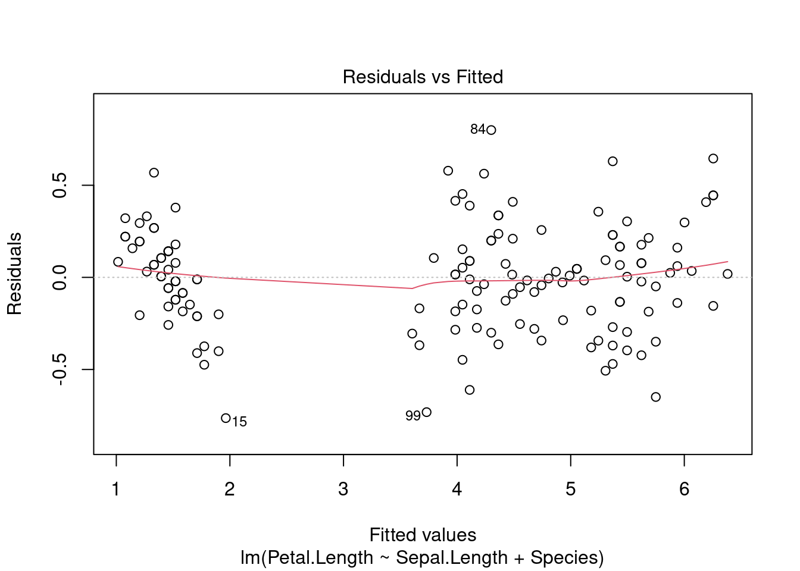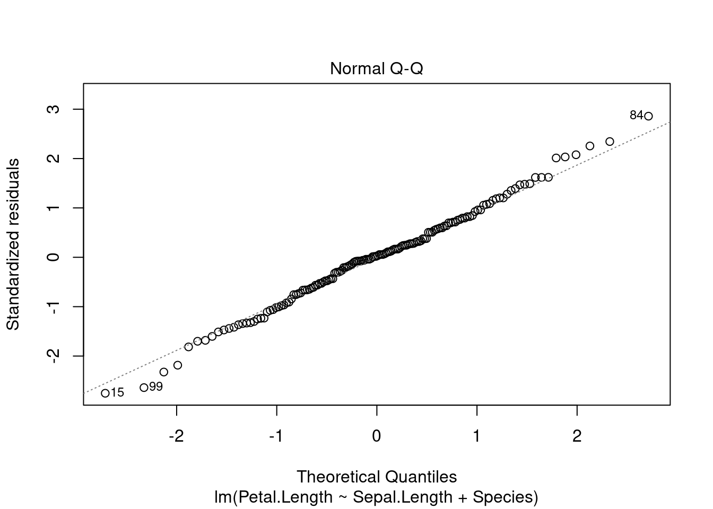
- сущетсвуют трюки, позволяющие автоматически отбирать модели (см. функцию
step()) - существует достаточно большое семейство регрессий, который зависят от типа независимой (предсказываемой) переменной или ее распределения
- логистическая (если предсказываемая переменная имеет два возможных исхода)
- мультиномиальная (если предсказываемая переменная имеет больше двух возможных дискретных исхода)
- нелиненые регресии (если связь между переменными нелинейна)
- регрессия со смешанными эффектами (если внутри данных есть группировки, т. е. наблюдения не независимы)
- и другие.
Как и в других функциях, вычисляющих описательную статистику (
mean(),median(),max(),min()и др.), функцияvar()(и все остальные функции, которые мы будем обсуждатьsd(),cov()) возвращаютNA, если в векторе есть пропущенные значения. Чтобы изменить это поведение, нужно добавить аргументna.rm = TRUE.↩︎